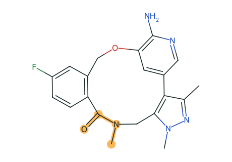

竞对 SAR 调研
ALK 大环系列 · 辉瑞
作者 [你的姓名] · 生成于 [导出日期] · 2 个专利家族 · 1 篇论文 · 已确认证据 0 条，其余均标“待确认”1 结论摘要
[由你撰写。工具不自动生成结论；对照页和 SAR 分析页中署名的判断会以“研究假设”列在第 5 节。]
2 家族时间线
优先权日公开号家族收录实施例
2010-05-04WO2011138751A244278717Examples 1、6、7（开链醚）
2012-03-06WO2013132376A148142828Examples 2、4、6（大环酰胺），引用上一家族
3 关键对照 · Example 7 与 Example 6
 A · WO2011138751A2 Ex 7
A · WO2011138751A2 Ex 7
B · WO2013132376A1 Ex 6
Assay（原始值并列，跨家族不算倍数）AB
WT ALK 酶 Ki0.536 nM<0.200 nM
WT EML4-ALK 细胞 IC5033.0 nM6.41 nM
4 SAR 分析 · 讨论材料
目标：改善细胞活性，同时控制外排 · 阈值为默认值（待化学家确认）· 不合成综合分数
去 N-甲基（2 对）取舍：6f → 6e 酶 Ki 有利（B/A 0.127 / 0.113），MDR1 外排比不利（B/A 2.24），LogD 未变；细胞活性缺 6f 数据
补测建议① 6f 细胞 IC50（CHEMBL3293164）② 6f 细胞 IC50（CHEMBL3293163）③ 8j 酶 Ki（CHEMBL3293161）
5 事实、假设与缺口
事实
较晚专利引用较早专利；所选分子共享 2-氨基吡啶醚与氟苯片段
较晚专利引用较早专利；所选分子共享 2-氨基吡啶醚与氟苯片段
研究假设
两家族属于同一相关系列（未署名）
两家族属于同一相关系列（未署名）
证据缺口
无直接演化证据；跨专利可比性未确认；未经 L3 复核
无直接演化证据；跨专利可比性未确认；未经 L3 复核
附录 · 证据来源
实施例等级结构来源活性来源
WO2011138751A2 Ex 1L2PDF p.127PDF p.186 下方表
WO2011138751A2 Ex 6L2PDF p.127 + p.128PDF p.186（细胞 2 项未测）
WO2011138751A2 Ex 7L2PDF p.127 + p.128PDF p.186 下方表
WO2013132376A1 Ex 2L2PDF p.260Table 1 PDF p.436
WO2013132376A1 Ex 4L2PDF p.264Table 1 PDF p.436
WO2013132376A1 Ex 6L2PDF p.268Table 1 PDF p.436